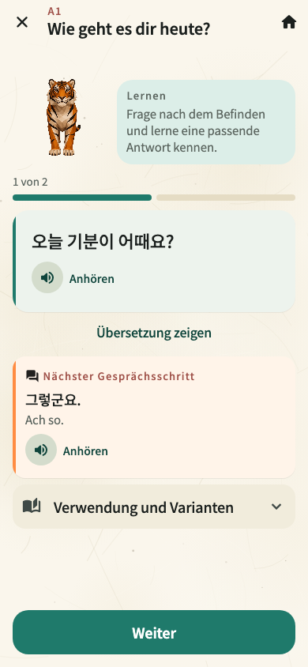
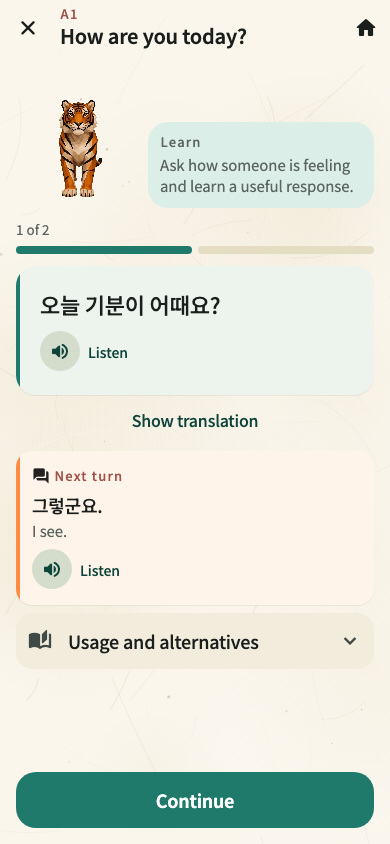
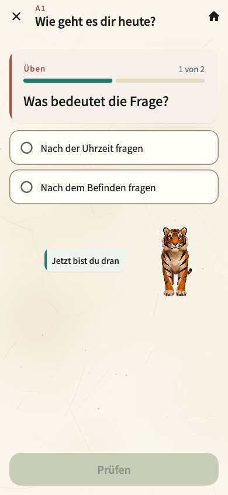
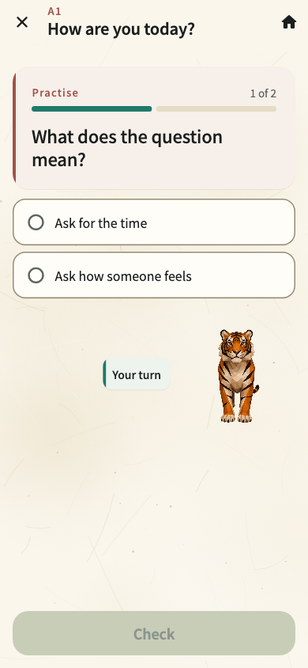
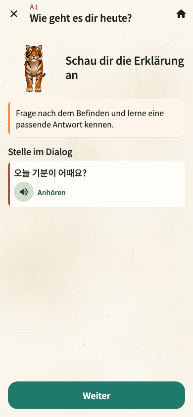
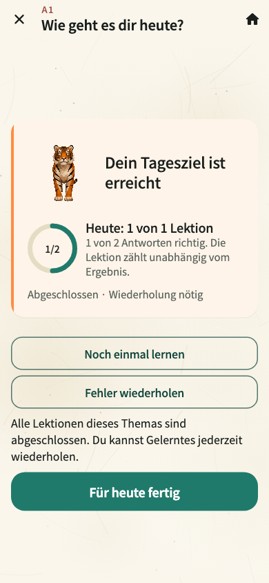
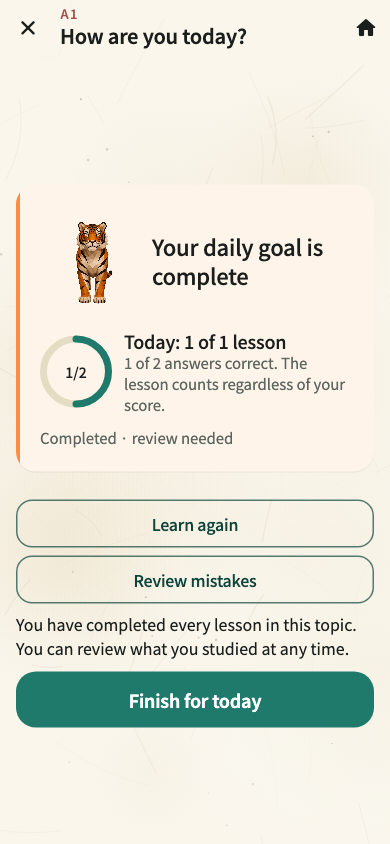

HANGUL SORI / FLUTTER LEARNING FLOW
학습에 반응이 생긴 한글소리
실제 Flutter 화면에서 문장을 듣고, 답하고, 피드백을 받는 흐름을 독일어·영어로 비교합니다.
실제 앱의 학습 흐름
현재 Flutter 위젯을 390 × 844로 렌더링했습니다. 문장 카드 전체를 눌러 듣고, 재생 중에는 소리 표시가 반응합니다. 정답 선택과 완료에는 짧은 움직임과 캐릭터 반응이 이어집니다.
01
문장 배우기
문장은 한 줄 흐름을 우선하고 듣기는 카드 전체에서 됩니다.


02
직접 답하기
선택 카드, 진행도, 호랑이의 짧은 응원이 같은 화면에서 반응합니다.


03
즉시 피드백
설명과 근거 문장을 구분하고, 근거 문장도 카드에서 바로 들을 수 있습니다.

04
학습 완료
학습 결과를 한 장의 무대로 묶고 복습으로 이어집니다.


글꼴 비교 자료
아래는 글꼴 검토 때 만든 A1 공항 시나리오 목업입니다. 위의 학습 흐름은 실제 Flutter 코드로 렌더링했습니다.